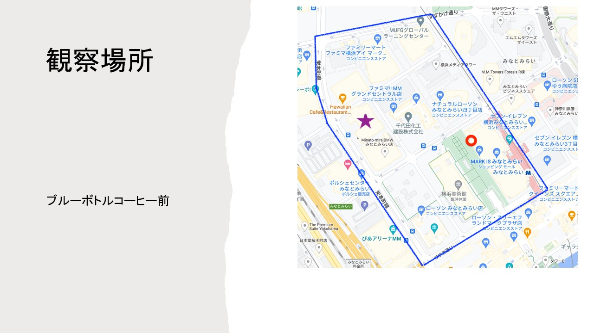
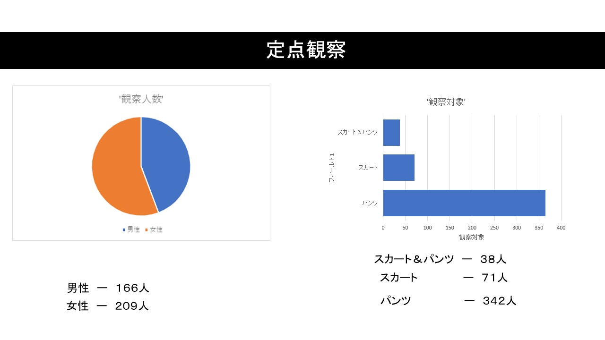

観察
観察内容
男女のボトムスの形状、スカートorパンツか（男女）
観察場所

観察方法
1人がスマホで撮影し、残りの3人がカウンターで集計をとった。
観察結果
男子166人 女子209人 計375人
男子 パンツ 166 100%
女子 パンツ 176人 スカート 71人
パンツかスカート区別できず 38人

図で見ると女性が多く、パンツが圧倒的に多いことが分かった。
観察まとめ
・気温が低かったため、スカートの中にレギンスやスキニー、ワイドパンツなどを重ねて履いている方も多く、区別がつきにくかった
・女性の方でも寒さ対策でパンツを履いている方が多かった
・お昼の時間帯だったためか、女性の方が多く、スーツの人は少数だった